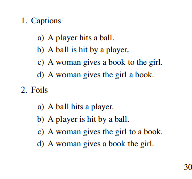
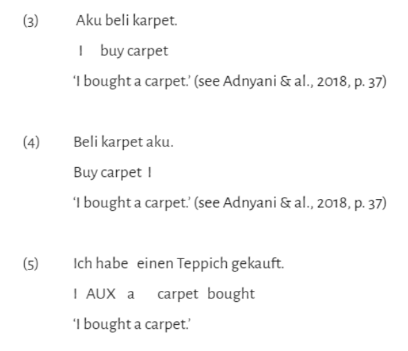
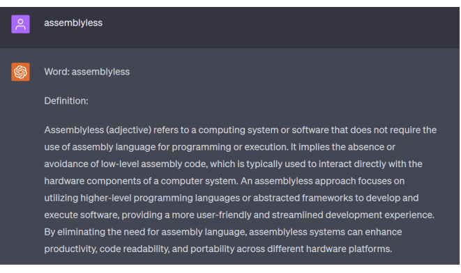

Hit or Be Hit: Tests of (Pre) Compositional Abilities in Vision and Language Models

Mădălina Zgreabăn | Albert Gatt | Pablo Mosteiro (2025)
Zgreabăn, M., Gatt, A., & Mosteiro, P. (2025, September). Hit or Be Hit: Tests of (Pre) Compositional Abilities in
Vision and Language Models. In Proceedings of the 21st Conference on Natural Language Processing (KONVENS
2025): Long and Short Papers (pp. 306-317).
Using a bilingual dual-path model for exploring syntactic mixing of
simultaneous bilingual children

Mădălina Zgreabăn | Alex Stasica (2024)
Zgreabăn, B. M., & Stasica, A (2024). Using a bilingual dual-path model for exploring syntactic mixing of
simultaneous bilingual children. LingUU, 7(2), 39–52.
Prompting ChatGPT to Draw Morphological Connections for New Word
Comprehension.

Madalina Zgreaban | Rishabh Suresh (2023)
Zgreabăn, B. M., & Suresh, R. (2023). Prompting ChatGPT to Draw Morphological Connections for New Word
Comprehension. In Proceedings of the 8th Student Research Workshop associated with the International Conference
Recent Advances in Natural Language Processing (pp. 98-107)
Verginica Barbu Mititelu, Mihaela Cristescu, Maria Mitrofan, Bianca-Mădălina Zgreabăn, and Elena-Andreea Bărbulescu. 2022. A Romanian Treebank Annotated with Verbal Multiword Expressions. In Proceedings of the Fifth International Conference on Computational Linguistics in Bulgaria (CLIB 2022), pages 137–145, Sofia, Bulgaria. Department of Computational Linguistics, IBL -- BAS.